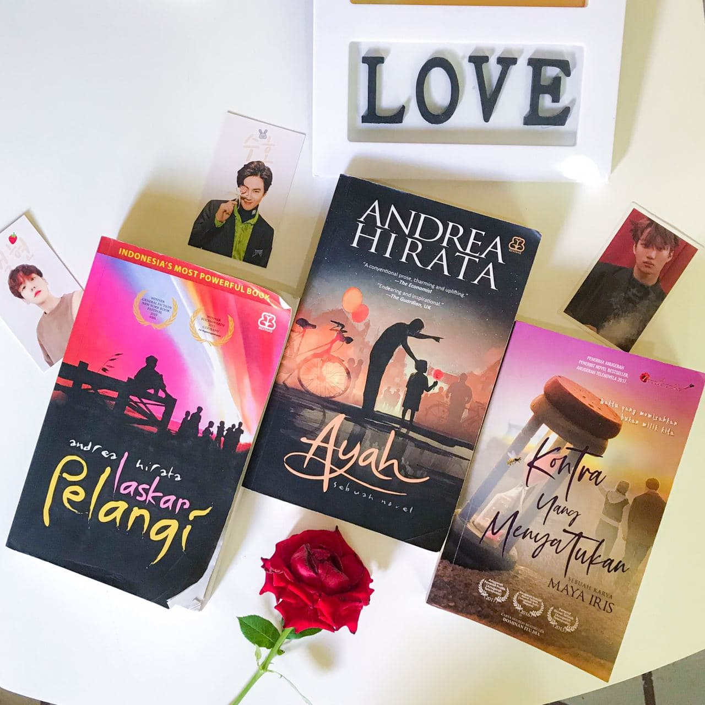

HOBBY


My Hobbies

Reading. I love to read especially novels. Back then when i started reading I often by new novels from my favourite Malaysian author but now my current obsession is i love to read Indonesia novels. Reading books from other country can make me learn new language, new knowledge and new experience. It is totally the best things about reading. You can gain new knowledge about somethings you never knew before about other countries, learn their language just incase one day you are going to visit other countries and gives you a better understanding of other cultures.Reading can helps you in your reading tests, vocabulary, general knowledge, it also helps you to increase your language skills. Pictures above are my favourite books from Indonesian author. There are so many more books that i love to read from Indonesian author eventhough the price is quite expensive but it is not the problem when it comes to our hobby. Looking forward to buy more new books soon.
I also love watching movies and dramas(read: Kdramas). About genre, I am more into romantic comedy, thriller and action genre. I don't like horror movies or drama. As a girl, despite of loving football, I love to watch Korean dramas too. No offense but are you really a girl if you don't like Kdrama? Okay just kidding haha. For me, I only watch what i want to watch and not influence by the rating, plot or because its viral on social media. Just because the rating is almost reaching the sky doesn't mean everyone loves to watch it. Everyone has their own preference.
Oh I love travel too but too broke to do so. Poor me :(.